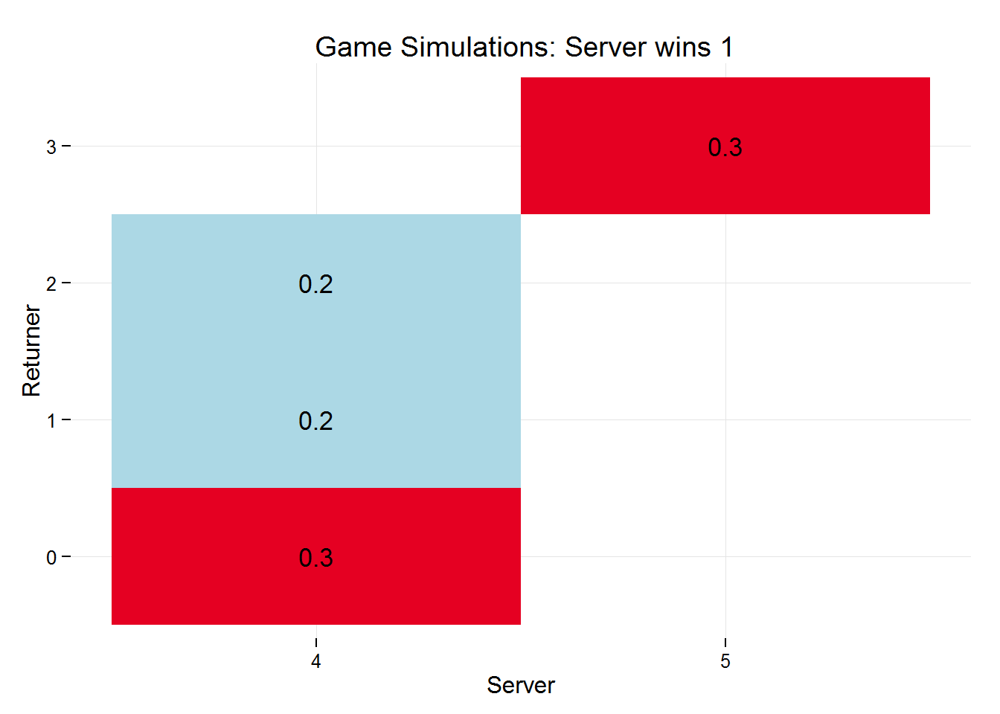

Simulate many service games given a number of parameters for the server, that include probability of the server winning a point on their first serve, on their second serve, and the probability that their first serve will go in, returning a detailed list.
simGames(n = 1e3, p, p2 = NULL, firstServe = NULL, detail = FALSE, player = "A")| param | details |
|---|---|
| n | number of simulations (default is 1000) |
| p | probability of server winning point on their first serve |
| p2 | probability of server winning point on their second serve |
| firstServe | probability of first serve being in |
| player | player name |
| .progress | plyr’s progress bar |
simGames will return a detailed list, containing data about the simulated games rather than just the results of the simulations, this list can then be converted to a dataset using simDf, an example dataset is show below.
There are a number of generic methods available for an object returned by simGames, these are print, summary and plot, example use is show below.
egGames <- simGames(n = 10, p = .78, p2 = .56, firstServe = .67)The object egGames has a class of svR_games which comes with a few methods
egGames##
## Simulation of 10 service games:
## Server won 1 (10/10) of games.
##
## Server probabilities:
## p p2 firstServe
## 0.78 0.56 0.67summary(egGames)##
## Simulation of 10 service games:
## Server won 1 (10/10) of games.
##
## Server probabilities:
## p p2 firstServe
## 0.78 0.56 0.67
##
## Service Game scores:
## returner
## server 0 1 3
## 4 0.4 0.3
## 5 0.3plot(egGames)
simDfThe returned list can also be entered into the function simDf which will convert the simulated games into a dataset.
df <- simDf(egGames)
head(df)## simNo player p p2 firstServe result server returner
## 1 1 A 0.78 0.56 0.67 1 4 0
## 2 2 A 0.78 0.56 0.67 1 4 0
## 3 3 A 0.78 0.56 0.67 1 4 1
## 4 4 A 0.78 0.56 0.67 1 5 3
## 5 5 A 0.78 0.56 0.67 1 4 0
## 6 6 A 0.78 0.56 0.67 1 5 3The variables in the dataset are:
| variables | about |
|---|---|
| simNo | simulation number |
| player | player name |
| p | probability of server winning a point on their first serve |
| p2 | probability of server winning a point on their second serve |
| firstServe | probability of first serve being in |
| result | game result (1 if server wins, 0 if returner wins) |
| server | number of points won by server in service game |
| returner | number of points won by returner in service game |